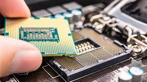
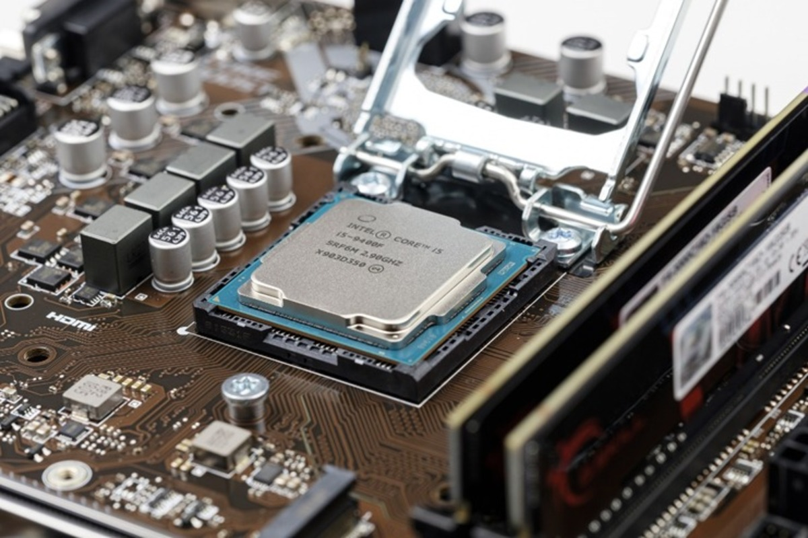

Arquitectura de computadoras
Arquitectura de computadoras
Estructura y funcionamiento del CPU
Selección de componentes para ensamble de equipo de cómputo
Aspectos básicos de la computación paralela
Practicas de laboratorio